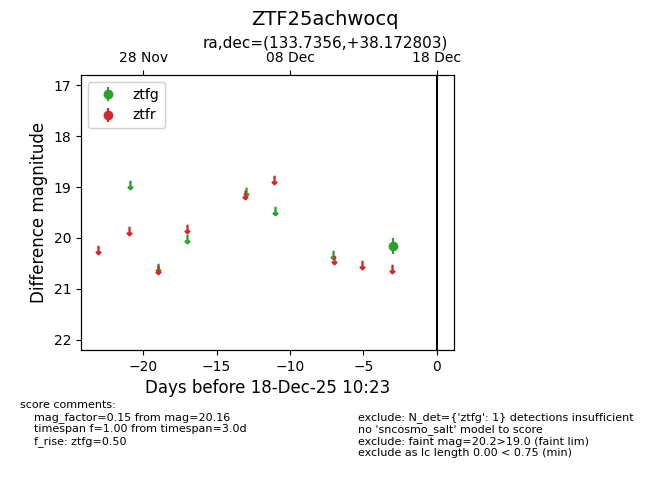
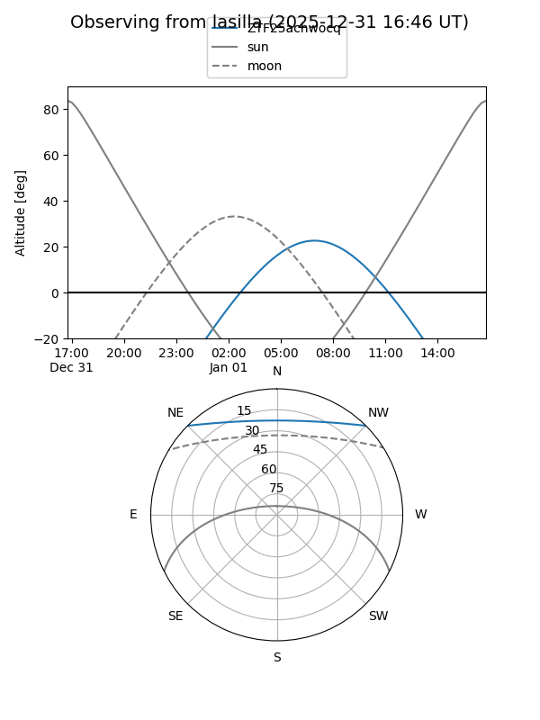
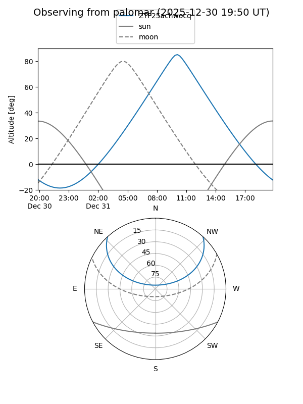

ZTF25achwocq
Target ZTF25achwocq at 2025-12-18 11:18
Aliases and brokers:
FINK: fink-portal.org/ZTF25achwocq
Lasair: lasair-ztf.lsst.ac.uk/objects/ZTF25achwocq
ALeRCE: alerce.online/object/ZTF25achwocq
alt names
ZTF25achwocq (ztf,fink_ztf)
Coordinates:
equatorial (ra, dec) = 133.7356,+38.17280
equatorial (HMS+DMS) = 08:54:56.55,+38:10:22.09
galactic (l, b) = (184.4496,+39.85676)
Photometry
last ztfg=20.16
1 ztfg detections
Lightcurve

Visibility


Additional plots